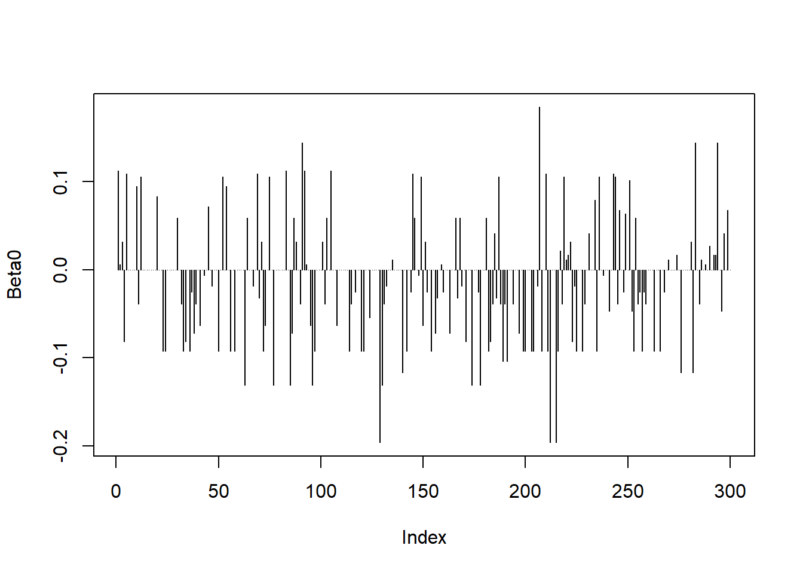

Capítulo 14 Modelos Lineales Generalizados (Construcción y Evaluación)
En la construcción de modelos lineales generalizados es importante tener en cuenta que NO existe un único modelo que sea válido. En la mayoría de los casos, habrá un número variable de modelos plausibles que puedan ajustarse a un conjunto determinado de datos. Parte del trabajo de construcción y evaluación del modelo es determinar cuál de todos estos modelos son adecuados, y entre todos los modelos adecuados, cuál es el que explica la mayor proporción de la varianza sujeto a la restricción de que todos los parámetros del modelo deberán ser estadísticamente significativos. En algunos casos habrá más de un modelo que ajuste igual de bien a los datos y en esos casos queda a criterio del modelador elegir uno u otro. Los pasos que hay que seguir en la construcción y evaluación de un GLM son muy similares a los de cualquier modelo estadístico.
14.1 Exploración de los datos.
Siempre es conveniente conocer los datos con los que se esta trabajando. Puede resultar interesante obtener gráficos que nos muestren la relación entre la variable de respuesta y cada una de las variables explicativas, gráficos de caja (box-plot) para variables categóricas, o matrices de correlación entre las variables explicativas. El objetivo de este análisis exploratorio es:
Buscar posibles relaciones de la variable respuesta/dependiente con la(s) variable(s) explicativa(s).
Considerar la necesidad de aplicar transformaciones de las variables.
Eliminar variables explicativas que estén altamente correlacionadas.
14.2 Elección de la estructura de errores y función liga.
A veces resultará fácil elegir estas propiedades del modelo basandose en las características de la variable de respuesta. Pero en otras ocasiones resultará tremendamente difícil, y será a posteriori cuando comprobemos, analizando los residuos, la idoneidad de la distribución de errores elegida. Por otro lado, puede ser una práctica recomendable el comparar modelos con distintas funciones liga para ver cuál se ajusta mejor a nuestros datos.
14.3 Bondad de ajuste.
- Los tests de significación para los estimadores del modelo. (p-values de los estimadores)
- La cantidad de varianza explicada por el modelo. Esto en GLM se conoce como devianza.
La devianza nos da una idea de la variabilidad del los datos. Por ello, para obtener una medida de la variabilidad explicada por el modelo, hemos de comparar la devianza del modelo nulo (Null deviance) con la devianza residual (Residual deviance), esto es, una medida de cuánto de la variabilidad de la variable respuesta no es explicado por el modelo. (Prueba de la Chi-cuadrada sobre la devianza)
14.4 Simplificación del modelo.
El principio de parsimonia requiere que el modelo sea tan simple como sea posible. Esto significa que no debe contener parámetros o niveles de un factor que sean redundantes. La simplificación del modelo implica por tanto:
La eliminación de las variables explicativas que no sean significativas.
La agrupación de los niveles de factores (variables categóricas) que no difieran entre sí.
La simplificación del modelo tiene que tener, además, una cierta lógica para el analista y no debe incrementar de manera significativa la devianza residual.
14.5 Criterios de evaluación de modelos.
Podemos utilizar la reducción de la devianza como una medida del ajuste del modelo a los datos. Los tests de significación para los parámetros del modelo son también útiles para ayudarnos a simplificar el modelo.
Un criterio comúnmente utilizado es el llamado Criterio de Información de Akaike (AIC del inglés Akaike Information Criterion).
Este índice evalúa tanto el ajuste del modelo a los datos como la complejidad del modelo. Cuanto más pequeño es el AIC mejor es el ajuste.
El AIC es muy útil para comparar modelos similares con distintos grados de complejidad o modelos iguales (mismas variables) pero con funciones liga distintas.
14.6 Análisis de los residuos.
Los residuos son las diferencias entre los valores estimados por el modelo y los valores observados. Sin embargo, muchas veces se utilizan los residuos estandarizados, que tienen que seguir una distribución normal.
Conviene analizar los siguientes gráficos:
Histograma de los residuos.
Gráfico de residuos frente a valores estimados.
Estos gráficos pueden indicar falta de linealidad, heterocedasticidad (varianza no constante) y valores atípicos.
- Gráficos de valores atípicos.
Existen tests que permiten detectar valores atípicos. Los índices más comunes son el índice de Cook y el de apalancamiento o leverage.
Estos gráficos ayudan la evaluación del modelo utilizado.
En caso necesario, sería preciso volver a plantear el modelo, tal vez utilizando una estructura de errores más adecuada, otra función liga o incluso eliminando ciertos datos que pueden estar desviando el análisis.
14.7 Evaluación de GLMs en R
Ejemplo de meses para default crediticio usando una distribución exponencial.
Construcción de la variable del tiempo transcurrido al default:
datos$meses_default <- datos$duration-datos$installment_commitment
m1 <- glm(meses_default ~ own_telephone, data = datos, family = Gamma)Análisis de puntos influyentes.
Distancia de Cook:

Puntos palanca para betas:


Puntos palanca para los datos ajustados: